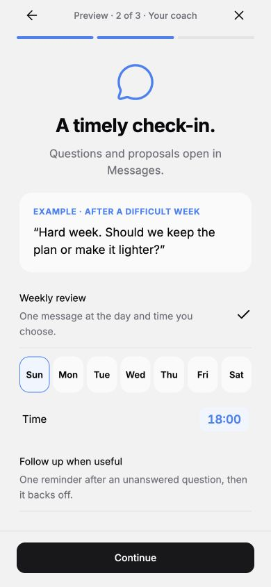
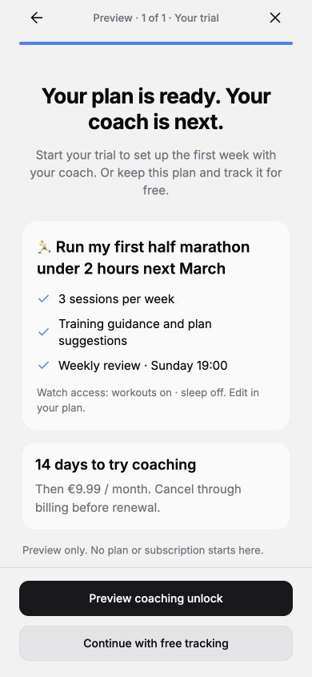

A role for each plan
Just track, stay consistent, or plan and adjust training.
From a half-marathon goal to the next useful conversation. Here’s the flow as it exists in the app.
Walk through every step ↓Actual Expo app screens at phone size, using prepared example data. The screen examples use illustrative wording. The Plan quality section shows live model replies from the real prompts.


Just track, stay consistent, or plan and adjust training.
Choose reviews, follow-ups and the data the coach can use.
Open the exact conversation, review a change, return to the updated plan.
Every example plan maps to a role. The role decides which onboarding answers are required, what the coach does, and what silence means. No new screens or stages per plan type.
| Plan | Role | Onboarding must get | What the coach does | When you go quiet |
|---|---|---|---|---|
| Exercise 4×/week with friends | tracking | How often | Nothing. Friends and the map are the accountability. | Nothing |
| Meditate again | consistency | Why (anger control). It is the lever the coach uses later. | Weekly check-in | One reminder, then one blunt “remember why you started” message with an archive offer you approve |
| Half marathon | training | Where you are now, date | Dated sessions, each with instructions | An unanswered “did it happen?” counts as missed after a day, and next week adapts. A late log still wins. |
| 80 kg | training | Where you are now, date, is it realistic | Sessions, plus “also log your weight weekly” | Same as the half marathon |
Training assumes a miss after an unanswered session check. Consistency gets a “why you started” message with an archive proposal. Tracking and ignored archive offers only pause contact. Nothing is archived without your tap. Training plans now have session check-ins on by default.
A jev yes/no check (about 0.4s) pushes back once on a clearly unrealistic target date, then accepts your answer. The first-week design can ask to track a measurement the plan lacks, such as weight in kg. Accepting it adds that as a plan activity. No new table.
A reply sent without a plan filter only counted if the question was the latest coach message. Otherwise the coach sent a reminder and then paused, even though you had answered. Any unfiltered reply now answers the open question.
Code: coach/monitoring/model.ts (when the coach speaks and what silence means) and coach/monitoring/generation/service.ts (all three prompts in one file; four small files were merged). 69 backend coach/onboarding tests and 15 app tests pass, including new database-backed cases for each silence path, late logs, the All-thread reply and weight tracking. The plan page and session-instruction screenshots were recaptured on 24 September. The other screens are from the previous capture, and the coaching tour wording has changed since.
The shared start has one screen each for target, starting point and personal reason. Only the target is required. Set the weekly count with − / +; days stay flexible. Coaching then adds three focused screens and a trial choice. Free tracking skips those.
The coach messages inside onboarding are illustrative examples. The trial length and price shown here come from the local fixture, not a live offer. Choosing free tracking, or declining coaching at the end, creates the plan without a trial.
The plan stays the home for the work. Messages stays the place for questions and decisions.
“Coach” shows an open change or question with an accent dot. “Coaching” holds the preferences.
All plans share a conversation. The pills narrow it to running or meditation.
The eye button opens each plan’s settings. Running can use workouts while meditation does not.
Here, the person asks for an easier running target. Tap a screen to read the details.
This example changes the saved weekly target. A change for only one week should use dated sessions; this distinction needs to stay obvious in the coach’s proposal.
Creation starts the first design in Messages. It does not silently fill a training calendar with an unreviewed prescription.
A proposal explains how the first week relates to what the person already does.
Date, amount, and two lines of instructions. Tap a card for the full how-to.
Ask one relevant question before proposing progression. The reply stays with the running plan.
These are prepared examples rendered in the real Messages screen. They show the intended conversation, not measured model quality.
Your logs and progress still work.
Your friends can provide the accountability.
After each planned session: “did it happen?” No log and no reply within a day, so it counts as missed. The next review adapts rather than stacking load. A late log flips it back to done.
A question, one reminder after 3 days, then a week later one short message: your own reason for starting, and an archive proposal. Logging again cancels it. Ignoring it pauses contact.
The plan remains. Nothing is archived or invented. Resuming contact is explicit.
If follow-ups are off, an unanswered question pauses outreach after seven days, with no archive offer. Reading is not replying. Reviews use the saved local time; the hourly worker runs at minute 7. At most one unsolicited contact a day, with extra difficulty follow-ups capped at one a week.
The scheduled coach now runs on DeepSeek v4.1 Flash at low reasoning (SCHEDULED_COACH_MODEL). This is why.
Ten new synthetic cases through the real production prompts: first weeks for running, 80 kg, weight loss, swimming and home workouts; a run nobody confirmed; a mixed running + meditation week; a knee twinge; two “why you started” messages. Reasoning was set to low. One generation per case, read by the coding assistant, with no specialist review. Two prompt fixes came out of the first run (flexible days, keeping weight tracking alongside a question). The two swimming and home-workout cases were added afterwards and never used for tuning. Raw replies are in model-comparison.json.
| Model | Valid | Median time | Per call | Read |
|---|---|---|---|---|
| openai/gpt-6-luna | 10/10 | 5.0s · max 8s | $0.0002 | Safe and cheapest, but too cautious: shortened runs below the baseline, a 300 m swim against a 400 m baseline. Generic session instructions (“full-body session using familiar machines”). |
| openai/gpt-5.6-luna | 10/10 | 5.7s · max 8s | $0.0005 | What production runs today. More specific instructions, and it proposed a smart “longest uninterrupted swim” metric. One half-marathon week jumped weekly volume by ~70%. |
| deepseek/deepseek-v4.1-flash | 10/10 | 14.6s · max 32s | $0.0020 | Best session instructions by far: named exercises, sets and reps, swim sets. Two to three times slower. Small format slips (emoji “weight_1”, unit “body weight”). |
| xiaomi/mimo-v2.6-pro | 2/8 | ~8s | $0.0002 | Not usable today. The Gateway doesn’t support structured output for MiMo (“responseFormat is not supported”), so it invents its own JSON shape. The one first week it produced raised weekly running from 10 to 16 km. Tested in the first run only. |
gpt-5.6-luna.weeksAvailable. Its one miss (1 km swim in 2 weeks from 2 lengths) errs toward letting you through, which is the intended bias.Reference context, not supplied to these runs: ACSM resistance training guidance, NHS beginner running guidance, IOC load-monitoring consensus.
Now the scheduled default. Check a week of real first-week designs and reviews in Messages, and switch back with one environment variable if needed.
The tour and plan Coaching copy now describes per-role silence. The realism push-back and the “Start tracking ⚖️ Weight” proposal row have no screenshots yet.
Session instructions exist; buzz-on-your-wrist sections like Garmin’s don’t. Later, once the Garmin workout push is worth it.